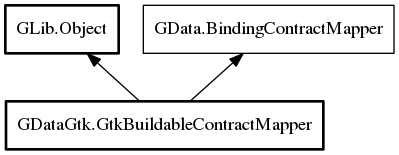

GtkBuildableContractMapper
Object Hierarchy:

Description:
public class GtkBuildableContractMapper :
Object,
BindingContractMapper
Provides easy mapping with composite widgets or layouts loaded from Glade In case of this mapper target should be parent container or
composite widget which contains widgets specifying correct Gtk.Buildable names (ID in Glade)
Since:
0.1
Content:
Properties:
- public bool widgets_first { set; get; }
Mapper will connect on either composite widget property or default
value property on widget with buildable name that is the same as property with prefix/suffix pattern
- public bool property_binding_disabled { set; get; }
Specifies if for some reason property binding to layout owner is
disabled or not. By default property binding is enabled.
- public BindingContract contract_object { set; get; }
Contract owning this mapper
Creation methods:
Methods:
Inherited Members:
All known members inherited from class GLib.Object
- @new
- new_valist
- newv
- add_toggle_ref
- add_weak_pointer
- bind_property
- connect
- constructed
- disconnect
- dispose
- dup_data
- dup_qdata
- freeze_notify
- @get
- get_class
- get_data
- get_property
- get_qdata
- get_type
- notify_property
- @ref
- ref_sink
- replace_data
- replace_qdata
- remove_toggle_ref
- remove_weak_pointer
- @set
- set_data
- set_data_full
- set_property
- set_qdata
- set_qdata_full
- steal_data
- steal_qdata
- thaw_notify
- unref
- weak_ref
- weak_unref
- notify
- ref_count
All known members inherited from interface GData.BindingContractMapper